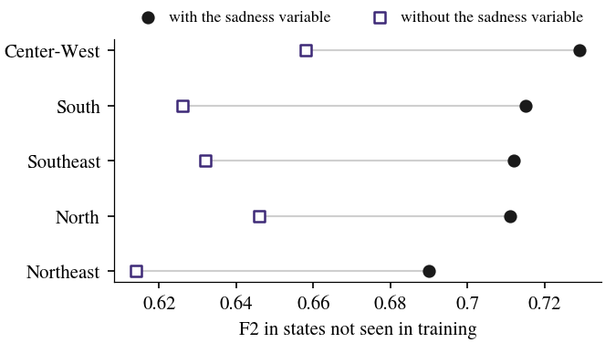
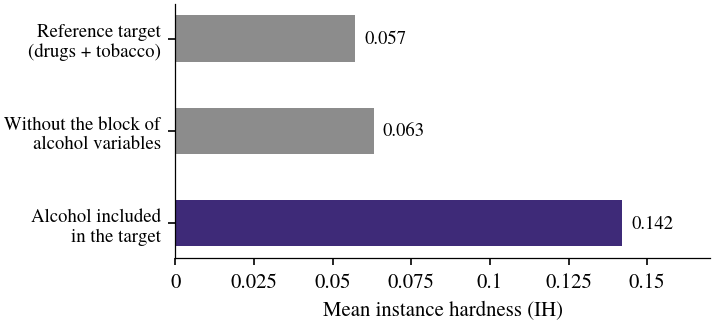

Multi-regional machine learning for adolescent mental health: a synthesis of three studies with PeNSE 2019
Thalles Paul Leandro Mota
Abstract. This report brings together three studies published in 2026 that apply machine learning to Brazil's National School Health Survey (PeNSE 2019) to identify adolescents at risk, always evaluating the models in states that took no part in training. The first classified the risk of frequent substance use in the Center-West, validated in Mato Grosso (AUROC 0.89; recall 0.80). The second classified psychological distress nationwide, training on one state per macro-region and evaluating on the remaining 22 (AUROC 0.87; F2 0.71), and showed that sensitivity holds without the sadness variable. The third asked where the difficulty of these problems comes from and found that it depends more on how the target is defined than on the variables available.
My role: first author: study design, modeling, stability analysis and writing. Tools: Python · XGBoost · LightGBM · CatBoost · Optuna · SHAP. Code: private; demonstration on request.
1. Why I studied this
Adolescent mental health is a social problem, and Brazil has laws to protect young people. Researchers around the world now use machine learning to flag adolescents at risk, but few look hard at whether the variables a model relies on are stable, whether it can be trusted outside the data it was trained on, and how its findings relate to what epidemiology already knows. That is what I set out to examine during my master's degree, and these three papers are the result.
The data come from PeNSE 2019, the national school health survey run by Brazil's statistics institute. Brazil is the size of a continent, so a model built with data from a few states has to prove itself in the others. Every model here was trained on some states and judged only on states it had never seen, and the screening models were tuned for sensitivity, because in screening, missing an adolescent at risk costs more than a false alarm.

2. What the three studies found
The first study looked at frequent substance use in the Center-West. Trained on two states and the Federal District and tested only on Mato Grosso, the model reached an AUROC of 0.89 and found 80 to 81% of the adolescents at risk; having friends who smoke, recent alcohol use and being sexually active weighed most, while family supervision and parental support protected.
The second study took psychological distress to the national scale, with 105,116 records. Trained on one state per macro-region and tested on the other 22, ten times over, the model reached an AUROC of 0.87 and found 84% of the adolescents in distress. The finding I care most about: removing the sadness question, the variable most tied to the outcome, barely changed that share (0.83). We also built a simple additive risk index from the model's own SHAP weights, with no interactions, and it came within 0.02 F2 of the full classifier, which makes it something a health professional can check by hand.
The third study asked where the difficulty comes from. Removing every alcohol variable barely made the problem harder (mean instance hardness from 0.057 to 0.063), but widening the target to include alcohol made it about 2.5 times harder (0.142). Past a reasonable set of variables, what you predict matters more than what you predict it with.

3. What this means in practice
For school screening, choose the metric on purpose: favor recall and accept more false alarms, with thresholds calibrated by region. A risk index built from the model's stable criteria nearly matches the classifier and can be audited by people who are not data scientists. Any rollout to new states should be validated in states outside training, because performance differs between regions. And before collecting more variables, look again at how the outcome is defined.
4. Limitations
The data are from 2019, before the pandemic. The outcomes are self-reported and work as indicators of distress or risk, not as a clinical diagnosis; these systems are meant for screening and monitoring.
Published papers
- Mota, T. P. L., Gonçalves, L. C. O., Oliveira, A. C. S. and Martins, C. A. (2026). Classifying psychological distress in Brazilian adolescents: a multi-regional machine learning approach. In Intelligent Systems (BRACIS 2026), LNAI 17109, p. 546–560. Springer. doi:10.1007/978-3-032-39904-5_37.
- Mota, T., Garcia, L. A. V. and Martins, C. (2026). Where does hardness come from? An instance hardness analysis of substance-use prediction in Brazilian adolescents. In Anais do XIV KDMiLe, p. 265–272. SBC. doi:10.5753/kdmile.2026.31988.
- Mota, T. P. L. and Martins, C. A. (2026). Machine learning to classify the risk of frequent substance use among adolescents in Brazil's Center-West (in Portuguese). In Anais do Congresso de Inteligência Artificial de Mato Grosso. doi:10.29327/9786527222910.1448987.